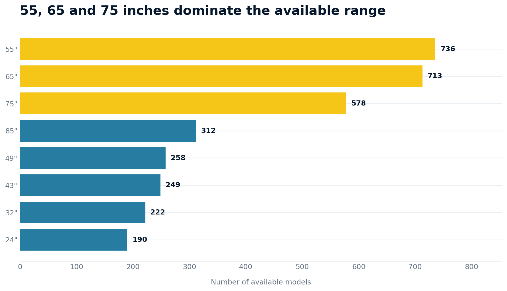
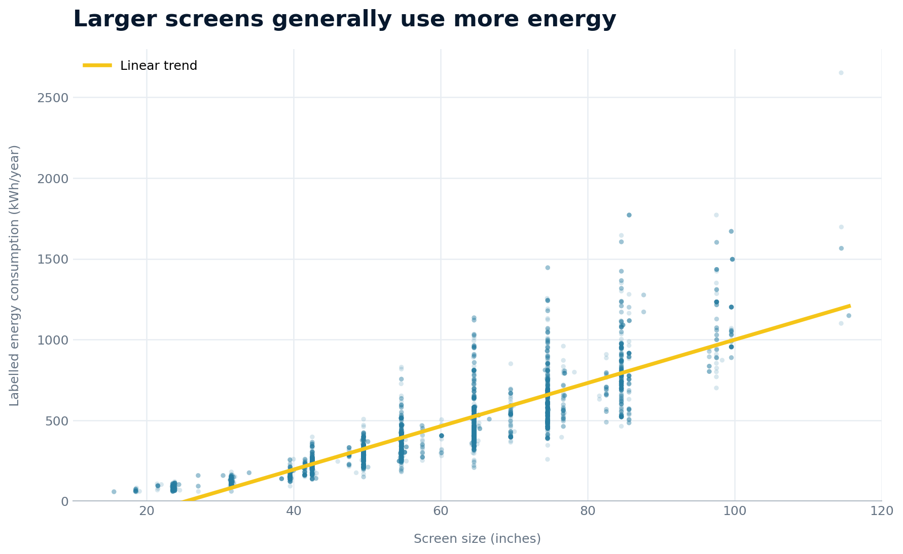
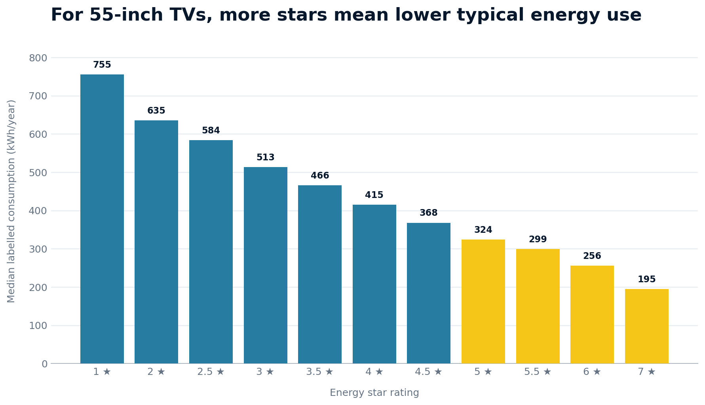

Data
The supplied file contained 4,724 television registration records. The analysis retained 4,508 approved, available products listed as sold in Australia with complete values for the selected measures.
A data story for Australian TV buyers
An analysis of 4,508 available television registrations shows that larger screens generally consume more electricity—but star ratings help buyers find more efficient models at the same size.
Audience
The story is designed for Australian consumers who may understand screen sizes but need a quick, non-technical way to compare electricity use. The charts use familiar inches, direct titles and highlighted takeaways.
01 — The market
After converting the recorded centimetre measurements to inches and rounding to the nearest whole inch, 55-inch televisions were the most frequent size with 736 available models. The next most frequent were 65-inch models (713) and 75-inch models (578).
Why it matters: The market gives buyers many options in these three sizes, so energy performance can be used to narrow the choice.

02 — The pattern
Each point represents one available television. The upward trend shows that larger screens tend to have higher labelled annual energy consumption. The Pearson correlation is 0.862, indicating a strong positive relationship in this dataset.
The spread of points also becomes wider for large televisions. Two products with similar screen sizes can still have very different consumption values.
Important: Correlation describes an association; it does not prove that size alone causes every difference.

Typical yearly consumption
Values are medians, which reduce the influence of unusually high or low products.
03 — A fairer comparison
To reduce the effect of screen size, this comparison only includes televisions between 54 and 56 inches. Within these 749 models, median consumption falls consistently as the rating increases.
A typical 4-star model records 415 kWh/year, compared with 256 kWh/year for a 6-star model. The dataset also ranges from 181 to 829 kWh/year among televisions of approximately the same size.
Buyer action: First choose an appropriate screen size, then compare both the star rating and the kWh/year number on the label.

Conclusion
Screen size is one of the clearest signals of yearly energy consumption, but it should not be the only comparison. For televisions of a similar size, the energy label reveals substantial efficiency differences. A buyer can therefore reduce likely energy use by avoiding unnecessary size and choosing a higher-rated model with a lower kWh/year figure.
Estimate the cost of a TVHow to read this story
The supplied file contained 4,724 television registration records. The analysis retained 4,508 approved, available products listed as sold in Australia with complete values for the selected measures.
Screen size was divided by 2.54 to convert centimetres to inches. Counts use rounded inches. Median values describe typical groups, and Pearson correlation summarises the numeric relationship.
Registrations represent available models, not sales popularity. Labelled consumption is a standardised estimate and may differ from household use. Duplicate families, inconsistent brand spelling and unusual models may influence results.
No personal information is present. Results are aggregated to avoid unfairly ranking individual brands without controlling for product mix, size, features or model duplication.